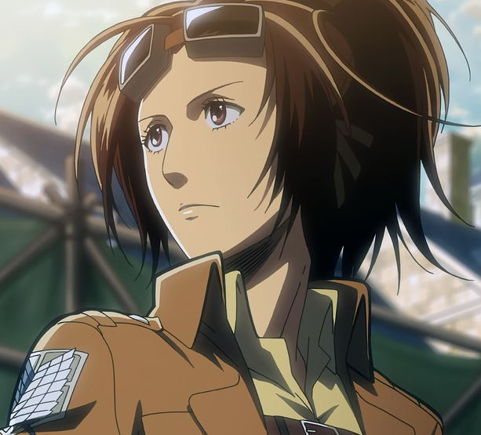
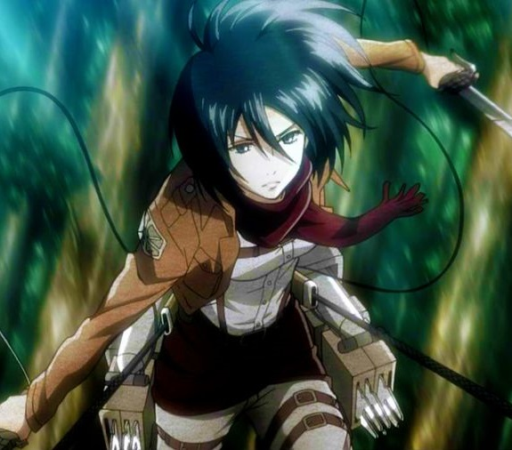
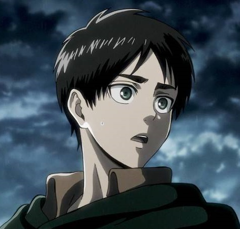
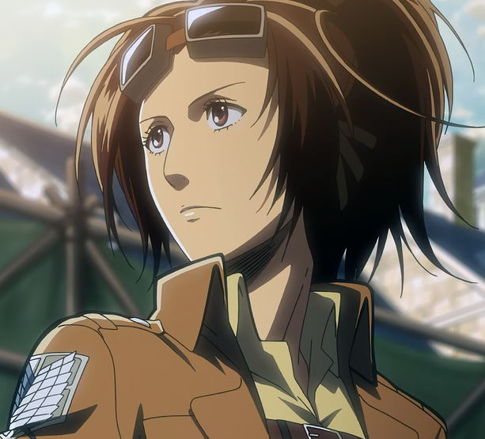
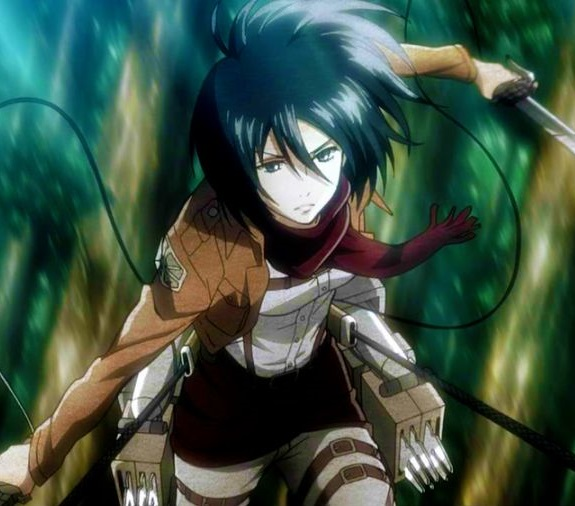
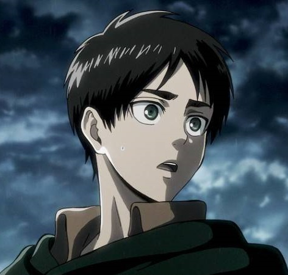

영화 소개
진격의 거인 ATTACK ON TITAN
줄거리
어느 날 갑자기 출현한 정체불명의 식인종 거인들에 의해 인류의 태반이 잡아 먹히며 인류는 절멸 위기에 처한다. 목숨을 부지한 생존자들은 높이 50m의 거대한 삼중의 방벽 월 마리아, 월 로제, 월 시나를 건설하여 그 곳으로 도피, 방벽 내부에서 100여 년에 걸쳐 평화의 시대를 영위하게 된다.
그리고 100여 년이 지난 845년, 대부분 주민들이 오래도록 지속되어 온 평화에 안주하는 반면, 주인공 엘런 예거는 사람들이 거인들에게 둘러싸여 벽 안에서 가축같이 살아가는 세계에 커다란
불만을 느낀다. 그는 벽 밖의 세계로 나가서 세계를 자유롭게 누비며 탐험하는 것을 열망한다. 거의 모두가 한결같이 벽 내부에서 주어진 평화를 만끽하는 것을 아무런 의심 없이 받아들이고 벽
밖으로 나아가고 싶어하는 자신을 별종으로 취급하고 이단시해도 매일 월 마리아 밖으로 방벽 외부 조사를 나가는 조사병단을 선망하며 꿈을 키워갔다.
소꿉친구들인 미카사 아커만, 아르민 알레르토와 셋이서 함께 거리를 거닐던 어느 날, 태어나 자란 고향인 시간시나 구 방벽에 돌연 나타난 초대형 거인이 뚫은 방벽의 구멍으로 들어온 거인들에게
수많은 민간인들이 죽임을 당하며 100년 동안 만들어졌던 벽 안 세계의 평화가 무너진다. 어머니 카를라 예거가 거인에게 잡아 먹히는 참혹한 광경을 목도한 엘런은 복수심을 느끼고 지상에 있는
모든 거인들을 구축하겠다고 다짐한다.
-
Genre
Dark Fantasy Action Creature Apocalypse Mystery War Picaresque -
Ratings
-
Casts
 




